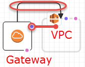

Le traduzioni sono generate tramite traduzione automatica. In caso di conflitto tra il contenuto di una traduzione e la versione originale in Inglese, quest'ultima prevarrà.
Riquadro canvas
In Designer, le risorse di modello sono visualizzate sotto forma di diagramma nel riquadro canvas. In questo riquadro è possibile modificare il layout del diagramma, aggiungere o rimuovere le risorse e aggiungere o rimuovere le connessioni tra le risorse. Ad esempio, è possibile aggiungere un gruppo Auto Scaling e una configurazione di avvio dal riquadro Resource types (Tipi di risorsa) al riquadro canvas. Per connettere queste risorse correlate, trascina una connessione dall'una all'altra.
In che modo Designer modella le risorse?
Quando si trascina una risorsa dal riquadro Resource types (Tipi di risorsa) al riquadro canvas, Designer la modella come container o come un oggetto quadrato.
- Container
-
Le risorse dei container sono rettangoli ridimensionabile che possono contenere altre risorse. Ad esempio, Designer modella il tipo di risorsa
AWS::EC2::VPCcome container. È possibile trascinare le risorse, ad esempio una sottorete, nel VPC.Risorsa del container

- Oggetti quadrati
-
Le risorse degli oggetti quadrati non possono essere ridimensionate né contenere altre risorse. Ad esempio, Designer modella il tipo di risorsa
AWS::EC2::Instancecome oggetto quadrato.Oggetto quadrato

Connessione di risorse
È possibile connettere le risorse per creare associazioni tra risorse correlate. Ad esempio, quando si aggiunge un gateway Internet e un VPC al riquadro canvas, non esiste una relazione tra questi. Per collegare il gateway al VPC, è necessario connetterli. Il metodo per la connessione di risorse dipende dal tipo di risorsa e dal modo in cui Designer modella la risorsa. Le descrizioni e le figure seguenti illustrano i singoli metodi.
- Aggiunta di risorse ai container
-
Quando si trascina una risorsa valida nei container, Designer crea automaticamente le associazioni tra la risorsa e il container. Ad esempio, i VPC sono risorse di container: è possibile trascinare una sottorete in un VPC e Designer associa automaticamente le due risorse.

Queste associazioni sono rappresentate nel modello come una funzione intrinseca
Ref, come mostrato nell'esempio seguente:JSON
"PublicSubnet": { "Type": "AWS::EC2::Subnet", "Properties": { "VpcId": { "Ref": "VPC" }, "CidrBlock": "10.0.0.0/24" }YAML
PublicSubnet: Type: 'AWS::EC2::Subnet' Properties: VpcId: !Ref VPC CidrBlock: 10.0.0.0/24In alcuni casi, trascinando una risorsa in un container non si crea un'associazione; è necessario trascinare una connessione tra le risorse (vedi il metodo successivo per informazioni sul trascinamento delle connessioni tra le risorse). Per vedere se Designer associa le risorse, è possibile utilizzare l'editor JSON e YAML integrato per cercare una funzione
Refda una risorsa all'altra. Ad esempio, quando si aggiunge un gruppo Auto Scaling in un container di sottorete, Designer non specifica la proprietàVPCZoneIdentifierdel gruppo (sottorete). Per associare le due risorse, è necessario trascinare una connessione dal gruppo lAuto Scaling alla sottorete. - Trascinamento di connessioni tra le risorse
-
Sul contorno di ogni quadrato e sulla risorsa di container sono presenti uno o più punti, che rappresentano le risorse a cui è possibile creare connessioni. È possibile creare una connessione trascinando una linea di connessione dal punto al tipo di risorsa corrispondente. Ad esempio, per collegare un gateway Internet a un VPC, trascinare una linea dal punto di collegamento del gateway VPC a un punto qualsiasi del VPC.
Queste associazioni sono rappresentate nel modello come una funzione intrinseca
Refo come tipo di risorsa separato. Ad esempio, quando si connette un gateway Internet a un VPC, Designer crea un tipo di risorsaAWS::EC2::VPCGatewayAttachmentnel modello per associarli. Risorse come queste non sono elencate nel riquadro Resource types (Tipi di risorsa).JSON
"VPCGatewayAttachment": { "Type": "AWS::EC2::VPCGatewayAttachment", "Properties": { "InternetGatewayId": { "Ref": "InternetGateway" }, "VpcId": { "Ref": "VPC" } }YAML
VPCGatewayAttachment: Type: 'AWS::EC2::VPCGatewayAttachment' Properties: InternetGatewayId: !Ref InternetGateway VpcId: !Ref VPC - Codifica di connessioni tra le risorse
-
In alcuni casi, è necessario modificare la sintassi JSON o YAML del modello per creare le connessioni, ad esempio quando si connettono due gruppi di sicurezza. In questi casi, si creano connessioni hardcoded (tratteggiate). Non è possibile creare o modificare queste connessioni nel riquadro canvas.

Di solito, quando si incorporano i riferimenti (
Ref) all'interno di una proprietà della risorsa, si creano connessioni hardcoded. Ad esempio, è possibile definire una connessione tra due gruppi di sicurezza in cui un gruppo di sicurezza ha una regola in ingresso incorporata che consente il traffico dall'altra. La seguente risorsaWebServerSecurityGroupha una regola in ingresso con un riferimento alla risorsaPublicLoadBalancerSecurityGroup.JSON
"WebServerSecurityGroup": { "Type": "AWS::EC2::SecurityGroup", "Properties": { "VpcId": { "Ref": "VPC" }, "GroupDescription": "Allow access from HTTP and SSH traffic", "SecurityGroupIngress": [ { "IpProtocol": "tcp", "FromPort": 80, "ToPort": 80, "CidrIp": "0.0.0.0/0" }, { "IpProtocol": "tcp", "FromPort": 22, "ToPort": 22, "CidrIp": { "Ref": "SSHLocation" } } ] } ...YAML
WebServerSecurityGroup: Type: 'AWS::EC2::SecurityGroup' Properties: VpcId: !Ref VPC GroupDescription: Allow access from HTTP and SSH traffic SecurityGroupIngress: - IpProtocol: tcp FromPort: 80 ToPort: 80 CidrIp: 0.0.0.0/0 - IpProtocol: tcp FromPort: 22 ToPort: 22 CidrIp: !Ref SSHLocation
Accesso alle operazioni comuni delle risorse con il menu Risorsa
Il menu Resource (Risorsa) consente di accedere facilmente alle operazioni comuni delle risorse: modifica delle proprietà delle risorse, duplicazione di una risorsa, eliminazione di una risorsa o visualizzazione della documentazione relativa alla risorsa. Per visualizzare il menu Resource (Risorsa), fare clic con il pulsante destro del mouse su una risorsa nel riquadro canvas. Il collegamento alla documentazione apre le informazioni di riferimento sul modello, che descrivono le proprietà e la sintassi per la risorsa specifica.
Menu Resource (Risorsa)

Definizione delle dipendenze esplicite
Per specificare l'ordine con cui AWS CloudFormation crea ed elimina le risorse, è possibile creare dipendenze esplicite. Le dipendenze esplicite risultano utili per sostituire la creazione e l'eliminazione parallele delle risorse. AWS CloudFormation determina automaticamente quali risorse di un modello possono essere elaborate in parallelo e quali invece non possono. Quando si specifica una proprietà che fa riferimento a un attributo da un'altra origine (tramite la funzione intrinseca Ref) o si ottiene un attributo da un'altra risorsa (con la funzione intrinseca Fn::GetAtt) nello stesso modello, significa che esiste una dipendenza e AWS CloudFormation crea le dipendenze nell'ordine corretto.
Tuttavia, in alcuni casi, è necessario definire esplicitamente le dipendenze. Ad esempio, una regola di instradamento non può utilizzare un gateway Internet finché il gateway non è stato collegato al VPC. Normalmente AWS CloudFormation crea la regola di instradamento immediatamente dopo aver creato il gateway Internet a causa di una dipendenza implicita. Tuttavia, AWS CloudFormation potrebbe creare la regola prima che il gateway Internet venga collegato al VPC, generando un errore. Pertanto, è necessario definire esplicitamente una dipendenza sul collegamento gateway-VPC.
Per creare una dipendenza esplicita, trascinare una linea dal punto DependsOn (*) sul percorso del collegamento gateway-VPC.

Per ulteriori informazioni sui casi in cui è necessario creare una dipendenza esplicita, vedi Attributo DependsOn.
JSON
In JSON queste dipendenze esplicite sono rappresentate come attributo DependsOn per una risorsa, come mostrato nell'esempio seguente:
"PublicRoute": { "Type": "AWS::EC2::Route", "DependsOn": "VPCGatewayAttachment", "Properties": { "DestinationCidrBlock": "0.0.0.0/0", "RouteTableId": { "Ref": "PublicRouteTable" }, "GatewayId": { "Ref": "InternetGateway" } }
YAML
In YAML queste dipendenze esplicite sono rappresentate come attributo DependsOn per una risorsa, come mostrato nell'esempio seguente:
PublicRoute: Type: 'AWS::EC2::Route' DependsOn: - VPCGatewayAttachment Properties: DestinationCidrBlock: 0.0.0.0/0 RouteTableId: !Ref PublicRouteTable GatewayId: !Ref InternetGateway